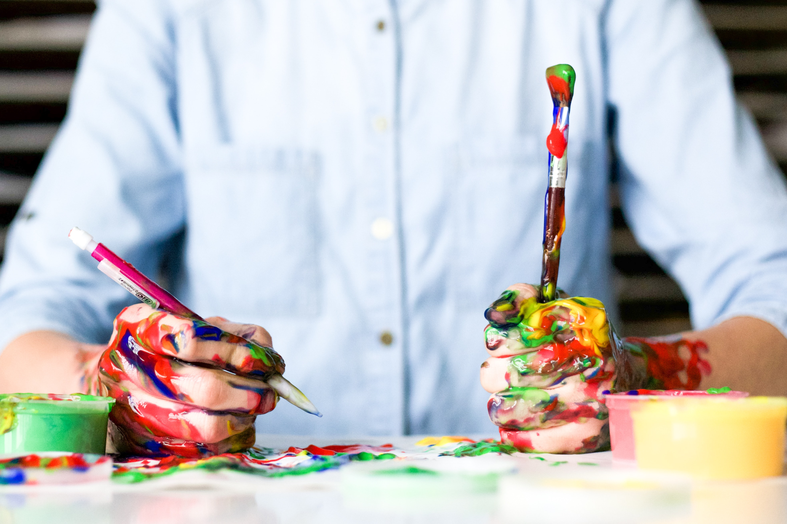

One of my favorites things to do is painting. With water colors, pencil or even on my tablet.
I start painting when I was really little, and I always had enjoyed the texture of the paint on the canvas, getting paint everywhere or even the smell. I can spend hours drawing shapes with no control or I can spend hours focusing on the same shape. Thats the reason why I love it, because you can be super focus or just being loose depending of how you feel. Painting is the perfect way to me, to express how I feel and help me to explore and expand my knowledge and creativity

Painting is good for the soul, or at least thats why my mum always telled me, and I believe it. There are a host of benefits to learning how to paint. It can improve your concentration, develop your critical thinking skills, and enhance your fine motor skills. It can foster creative growth, build your confidence, promote a positive attitude and nurture emotional growth. Learning how to paint should be more pleasure than pressure. Just remember, the key to getting better is repetition. Practice, practice, practice!
Painting makes me, really happy